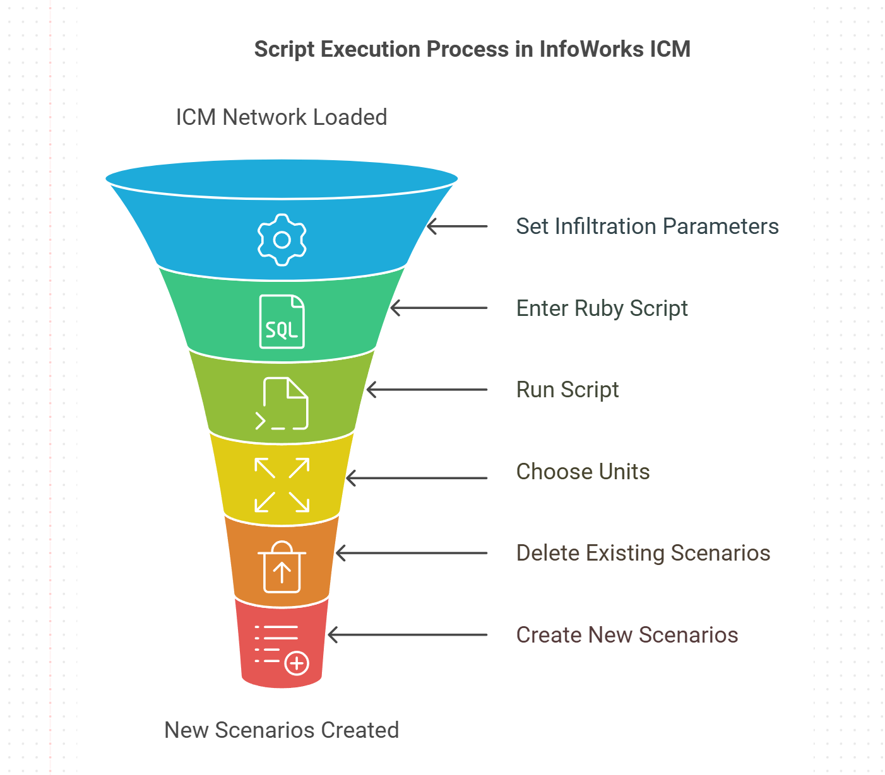

markdown
image.pngreadme.mdScenario_GIM.rbScenario_Link_Data.rbThis section focuses on the 0004 - Scenario Sensitivity - InfoWorks directory under the 02 SWMM folder, which contains Ruby scripts designed for scenario sensitivity analysis within InfoWorks:
image.png likely provides visual support or examples for the scripts or concepts within this directory.readme.md contains detailed information or instructions on how to use the scripts in this folder.Scenario_GIM.rb handles Global Importance Measures (GIM) for scenario sensitivity, which helps in understanding the impact of different parameters or scenarios on the model's outcomes.Scenario_Link_Data.rb deals with analyzing data related to links in different scenarios, providing insights into how changes in scenarios affect network connectivity or flow.To use the scripts within the 0004 - Scenario Sensitivity - InfoWorks directory:
0004 - Scenario Sensitivity - InfoWorks subdirectory under 02 SWMM.For example, to run the GIM scenario analysis:
ruby Scenario_GIM.rb
Note
Always ensure you have the necessary permissions to run these scripts.
Backup your data before running scripts that might alter or analyze extensive datasets.
The readme.md file within this directory might contain specific instructions, notes, or prerequisites for running these sensitivity analysis scripts.
This README now focuses exclusively on the `0004 - Scenario Sensitivity - InfoWorks` folder, detailing its contents and usage.
# Extended Markdown Summary for the “Scenario Sensitivity Parameter” Ruby Script
Below is an extended documentation and commentary for a **Ruby script** that interacts with an InfoWorks ICM (or equivalent InfoWorks WS) network to **create and manage scenarios** based on adjusting infiltration parameters. This script:
1. Prompts the user to choose between US or SI units (though currently, the script uses the prompt but does not apply it in subsequent logic).
2. Deletes all existing scenarios except for “Base.”
3. Creates new scenarios for various “percolation_coefficient” factors.
4. Updates infiltration parameters in each newly created scenario.
---
## 1. Purpose of the Script
This script’s **main goal** is to **automate scenario creation** for sensitivity testing. By applying different percentage factors (e.g., −25%, −10%, +10%, +25%) to a chosen parameter (`percolation_coefficient`), you can quickly evaluate how model results change under different infiltration assumptions.
It also provides a basic user prompt (to select US or SI units) and displays helpful messages about the operations performed.
---
## 2. Prerequisites / Assumptions
1. You are **inside** InfoWorks ICM or a compatible Ruby environment that has access to `WSApplication` and the **current network** (`WSApplication.current_network`).
2. You have **write access** to the current network so you can delete and add scenarios.
3. Your infiltration parameters are stored in the **`hw_ground_infiltration`** table (or a similar table) for row objects.
4. There is an existing **Base** scenario that you want to preserve.
---
## 3. Code Explanation
Below is the code with annotated comments to explain each section in detail:
```ruby
# Original Source https://github.com/ngerdts7/ICM_Tools123
# RED + CoPilot edits
cn = WSApplication.current_network
# Step 1: Prompt user for unit selection
val = WSApplication.prompt "Scenario Sensitivity Parameter Selection",
[
['USA Units','Boolean',false],
['SI Units','Boolean',true]
], false
THANK_YOU_MESSAGE1 = "That's it! You've successfully added scenarios your ICM InfoWorks network. Thank you for using our Ruby script."
THANK_YOU_MESSAGE2 = "If you have any questions or need further assistance, don't hesitate to reach out to the Autodesk EBCS Team."
THANK_YOU_MESSAGE3 = "Happy Modeling! or Happy Modelling! (depending on your location)"
# Define the factors for sensitivity testing
factors = [-0.25, -0.10, 0.10, 0.25]
parameters = ['percolation_coefficient']
# Generate scenario names for each (parameter, factor) combination
scenarios = parameters.product(factors).map do |parameter, factor|
"#{parameter}_factor_#{(factor*100).to_i}"
end
# Step 2: Delete all existing scenarios except 'Base'
cn.scenarios do |scenario|
if scenario != 'Base'
cn.delete_scenario(scenario)
end
end
puts "Operation successful! All scenarios, except for the base scenario, have been deleted and new scenarios have been added."
puts "If this action was performed in error, don't worry! You can easily revert these changes."
puts "Just go to the ICM Explorer Window and select 'Revert Changes' to restore the deleted scenarios."
puts
# Step 3: Create and modify each scenario
scenarios.zip(factors).each do |scenario, factor|
# Add the new scenario
cn.add_scenario(scenario, nil, '')
cn.current_scenario = scenario
cn.transaction_begin
puts "The factor for scenario is #{factor}"
# Step 4: Apply the factor to the infiltration row objects
ro = cn.row_objects('hw_ground_infiltration').each do |ro|
ro.percolation_coefficient = ro.percolation_coefficient * (1 + factor)
ro.write
end
cn.transaction_commit
end
# Summary of the operation
puts "Number of scenarios added: #{scenarios.length}"
puts
puts THANK_YOU_MESSAGE1
puts THANK_YOU_MESSAGE2
puts THANK_YOU_MESSAGE3
val = WSApplication.prompt "Scenario Sensitivity Parameter Selection",
[
['USA Units','Boolean',false],
['SI Units','Boolean',true]
], false
val) is not used later in the script to branch logic or change parameters—this could be expanded in the future if you want different infiltration defaults or scenario naming based on units.THANK_YOU_MESSAGE1 = "...(text)..."
THANK_YOU_MESSAGE2 = "...(text)..."
THANK_YOU_MESSAGE3 = "...(text)..."
factors = [-0.25, -0.10, 0.10, 0.25]
parameters = ['percolation_coefficient']
factors: A numeric array representing the percentage changes you want to test. -0.25 = –25% -0.10 = –10% 0.10 = +10% 0.25 = +25% parameters: An array of strings referencing which fields (in infiltration row objects) you want to adjust. In this script, there’s only one: percolation_coefficient. You could expand this array if you want to test multiple fields, e.g. ['percolation_coefficient', 'soil_infiltration_rate'].
scenarios = parameters.product(factors).map do |parameter, factor|
"#{parameter}_factor_#{(factor*100).to_i}"
end
parameters.product(factors): Produces all combinations, e.g., [("percolation_coefficient", -0.25), ("percolation_coefficient", -0.10), ...].map block**: Converts each pair to a string like "percolation_coefficient_factor_-25". cn.scenarios do |scenario|
if scenario != 'Base'
cn.delete_scenario(scenario)
end
end
scenarios.zip(factors).each do |scenario, factor|
cn.add_scenario(scenario, nil, '')
cn.current_scenario = scenario
cn.transaction_begin
# ...
cn.transaction_commit
end
scenarios.zip(factors): Pairs up each scenario name with its corresponding factor. cn.add_scenario(scenario, nil, ''): Adds a new scenario. nil and '' arguments indicate no “parent scenario” and an empty description, respectively. cn.current_scenario = scenario: Switches to the newly created scenario so changes affect this scenario’s row objects. cn.transaction_begin/commit: Wraps row object modifications in a database transaction.ro = cn.row_objects('hw_ground_infiltration').each do |ro|
ro.percolation_coefficient = ro.percolation_coefficient * (1 + factor)
ro.write
end
cn.row_objects('hw_ground_infiltration'): Retrieves all infiltration row objects for the current scenario. percolation_coefficient by (1 + factor). coefficient * 0.75. If factor = +0.25, it becomes coefficient * 1.25. ro.write: Saves each updated row object change.puts "Number of scenarios added: #{scenarios.length}"
puts
puts THANK_YOU_MESSAGE1
puts THANK_YOU_MESSAGE2
puts THANK_YOU_MESSAGE3
percolation_coefficient_factor_-25, percolation_coefficient_factor_-10, etc.) and apply the infiltration multipliers. 
Include Additional Parameters
- If you want to adjust other infiltration parameters (e.g., suction head, hydraulic conductivity), add them to the parameters array.
- You’d then need to adjust how you apply the factor to each parameter.
Different Factors
- Adjust factors if you want different percentage changes, e.g., [0.05, 0.10, 0.20].
Conditional Deletion
- You might not want to delete all existing scenarios except “Base” every time. You could comment out or remove the deletion portion and create new scenarios in addition to existing ones.
Unit Selection
- The current script doesn’t do anything with the user’s choice of US vs. SI units. You could incorporate logic that, for example, multiplies infiltration rates by different factors or uses a different parameter name if the user selects US.
Logging / Reporting
- Instead of printing to the console, you could write changes to a log file or generate a user-facing report.
cn.row_objects('hw_ground_infiltration') returns an empty array, confirm that infiltration objects exist and that you’re in the correct layer or scenario. This Ruby script is a powerful illustration of programmatic scenario creation and parameter manipulation within InfoWorks ICM. It streamlines the process of running sensitivity analyses on infiltration parameters by:
Through modest extensions (such as adding more parameters or using the unit selection prompt), you can adapt it to meet various hydraulic/hydrologic modeling needs. Happy modeling!
The script is originally sourced from ICM_Tools123 and has been edited by RED + CoPilot.